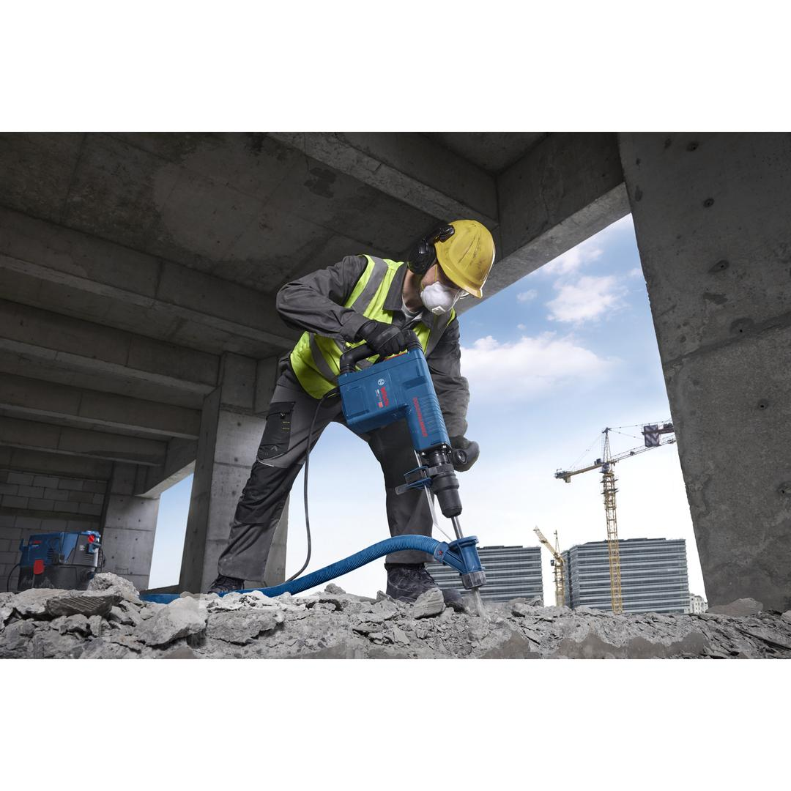
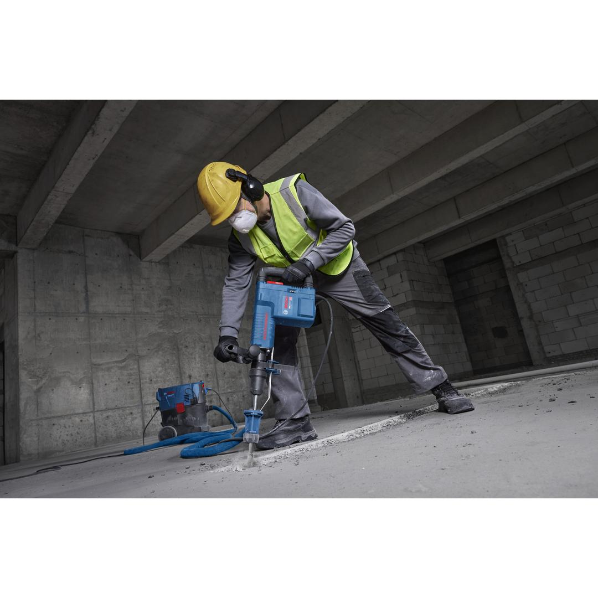
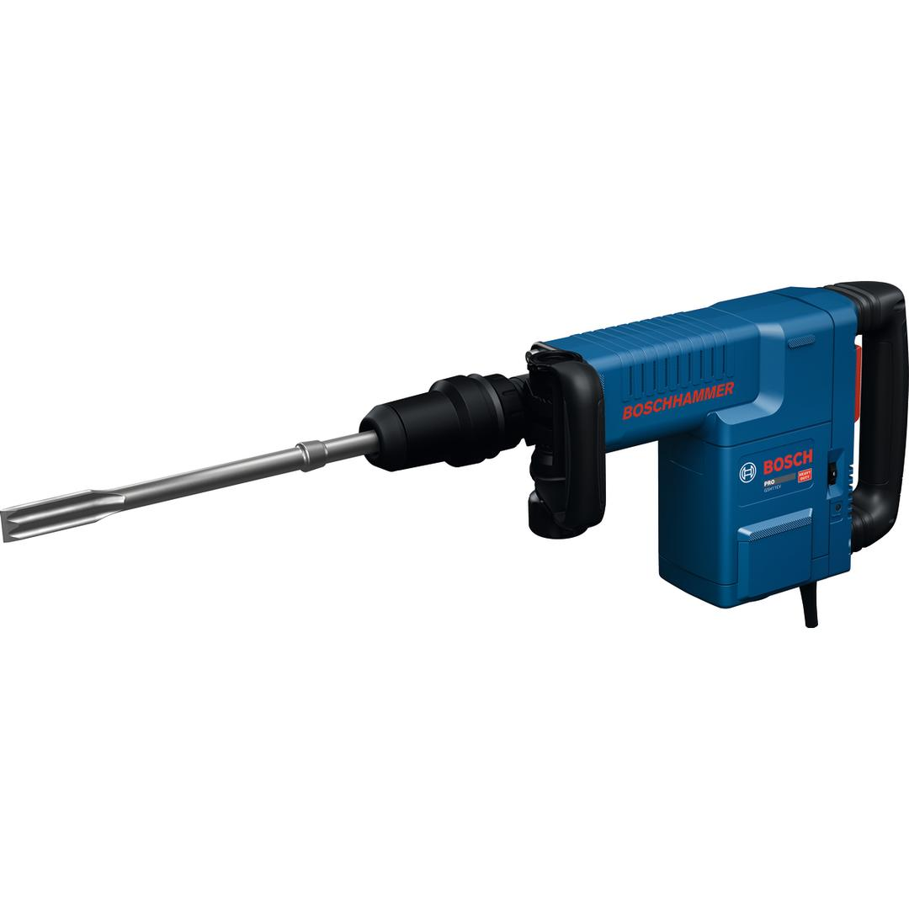
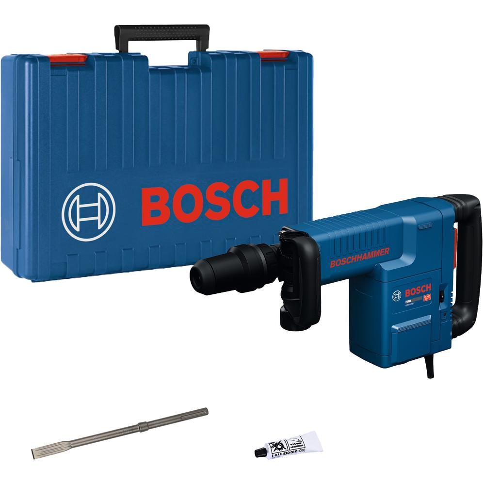

06113160K0




| Noise level |
The A-rated noise level of the power tool is typically as follows: Sound pressure level dB(A); Sound power level dB(A). Uncertainty K= dB. |
| Voltage, electrical |
220 V |
| Rated input power |
1,500 W |
| Impact energy |
16.8 J |
| Impact rate at rated speed |
900 – 1,890 bpm |
| Weight |
10.300 kg |
| Tool dimensions (width) |
120 mm |
| Tool dimensions (length) |
578 mm |
| Tool dimensions (height) |
270 mm |
| Tool holder |
SDS max |
The specialist tool for demolition work with vibration control
The corded PRO GSH11EV demolition hammer is easy to use in both horizontal and vertical applications thanks to its compact L-shape design. It combines power and comfort with its high-performance motor and comfortable low-vibration handle, making tough demolition work less tiring. This tool is built for durability, featuring exceptionally robust components. Plus, maintenance is easy thanks to a service display indicating when the carbon brush needs changing.
The PRO GSH11EV is for various demolition tasks like breakthroughs, chiseling through big pipes and windows, correcting beams or floors, and removing plaster from concrete and masonry.
Additional information: The PRO GSH11EV comes with a sliding Lock-on switch, a speed dial with 6 settings, a Vario-lock function with 12 angle positions, and an auxiliary handle that can be rotated 360 degrees.